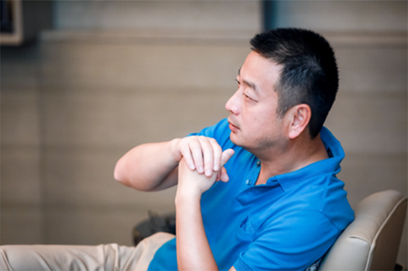

新冠疫情终将结束，旅行需求不会消失。我们对国内外旅游业的长期前景充满信心。短期中断不会改变我们的国际扩张长期战略。在专注国内业务努力复苏的同时，携程也将在国际业务上苦练内功，为整个产品和服务的强势回归做好准备。
新冠疫情终将结束，旅行需求不会消失。我们对国内外旅游业的长期前景充满信心。短期中断不会改变我们的国际扩张长期战略。在专注国内业务努力复苏的同时，携程也将在国际业务上苦练内功，为整个产品和服务的强势回归做好准备。

面对疫情的持续影响，旅行业受创首当其冲，作为在线旅游行业领头羊，携程退款垫资超10亿量级，面临着渡劫大考。
俗话说，早不忙，晚必慌。
携程提早嗅到了国内旅行复苏的先机，3月初就开始启动“复兴V计划”，联合百余目的地、万家品牌投入10亿元复苏基金，并联手数万家酒店、1000多条旅游线路、100多条航线和300多家景区门票，携程率先通过微信支付以发放消费券等形式，向广大消费者预售未来旅行。此后，国内旅游业走出低谷，在“V字型”复兴右弦上疾驰。携程Q1财报显示，高星酒店回血飞快。
旅行是全球联动的事。唯有全球复苏，旅行业才能彻底复苏。6月22日，携程与180多个国家的33000家酒店携手，给予旅客60%的独家折扣，为旅行业复苏再添动力。针对疫后不确定的出行场景，携程将“复兴V计划”的卖点“放心退、随时退”
延伸至海外，开启“随心改”保障计划。携程成功打造出中国旅行复苏的模式，向全球旅行业传递信念火种。
7月14日，国内跨省游开启，预示着旅行业从半年的休止符步入正常化轨道。携程前瞻性的规划和布局，为自己赢得了先机和主动权。
